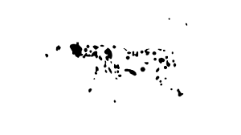

Hvad er Gestaltlovene og hvorfor er de vigtige?
Gestalt lovene er essentielle for os som Multimedie designere. Som mennesker bedømmer vi et design på få sekunder - derfor skal vi fange vores modtager på ekstremt kort tid. Dette kan opnås ved Gestaltlovene, da de fortæller os om, hvordan vores hjerne bedømmer noget; og hvor vores øjne egentlig kigger hen.
Closure er når vores hjerne ”færdiggøre et billede” i forhold til et motiv, som måske går i et med baggrunden – eller i en tegneserie hvor man har tegnet en bevægelse.
Proximity er en slags sortering af ting i et design. Vores hjerne vil altid gruppere og samle de elementer, som står tæt sammen – og adskille dem, som har afstand til hinanden.
Continuation er når vores øje fanger et punkt eller en linje – og følger det. Det er meget vigtigt i forhold til generel design, da det er i løbet af de første få sekunder vi bedømmer det vi ser.

Symmetry er vigtigt for vores hjerne, da det giver os en tilfredsstillelse – og dermed en form for ro. Når noget er lavet asymmetrisk kan det skabe forvirring og irritation.
Figure Ground er når vores hjerne ser en figur eller et billede gemt i baggrunden.

Similarity sker når vores hjerne sortere former, farver og størrelser. Vi vil eksempelvis hellere have cirkler af forskellige størrelser samlet, end cirkler og trekanter af forskellige farver.

Common Fate er når noget går i samme retning. Det ses i naturen når fugle flyver i flok – eller fisk i stimer. Det er endnu en gang en måde vores hjerne samler og grupperer ting, som går i samme retning.